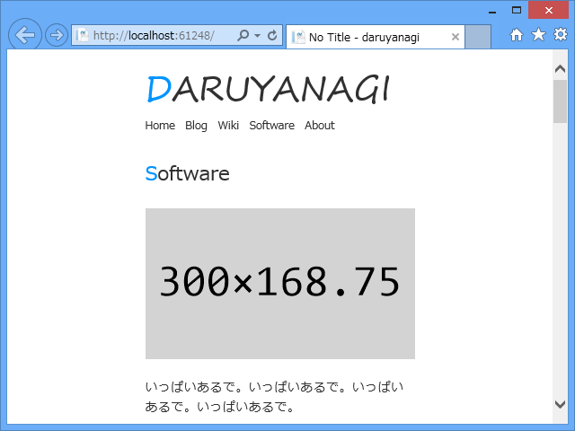
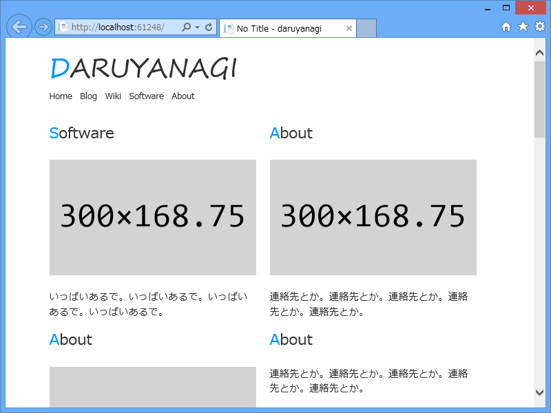
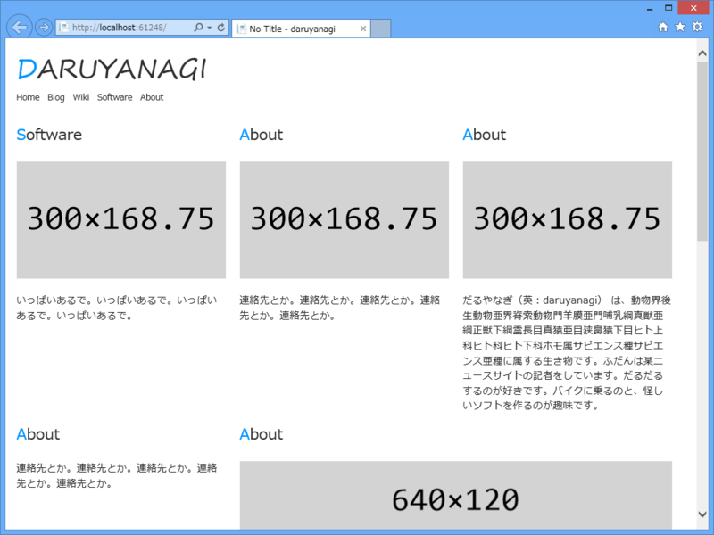

WebMatrix 2 でレスポンシブな CSS グリッドを作ってみる
公開日：
WebMatrix 2 は iPhone での見栄えも簡単にチェックできてなかなかいい。
CSS グリッド
最近、Twitter Bootstrap は大げさすぎるなぁ、もうちょっと軽量のグリッドシステムないかな、と思っていたのだけど、こういうのを見つけた。
いい感じかもしれない。
.container { width: 940px; margin: 0 auto;} .grid1, .grid2, .grid3, .grid4, .grid5, .grid6, .grid7, .grid8, .grid9, .grid10, .grid11 { float: left; display: inline; margin-left: 20px; } .grid1 {width: 60px;} .grid2 {width: 140px;} .grid3 {width: 220px;} .grid4 {width: 300px;} .grid5 {width: 380px;} .grid6 {width: 460px;} .grid7 {width: 540px;} .grid8 {width: 620px;} .grid9 {width: 700px;} .grid10 {width: 780px;} .grid11 {width: 860px;} .first {margin-left: 0;clear: left;}/* clearfix */ .clearfix:after { visibility: hidden; display: block; font-size: 0; content: " "; clear: both; height: 0; } /* IE6 */ * html .clearfix { zoom: 1;} /* IE7 */ *:first-child+html .clearfix {zoom: 1;}
で、grid* で幅を指定して、先頭になるグリッドに .first をつければいいみたい。ネストもできるよ。あったまいい！
More responsible！
でも、それだと一つ問題がある。レスポンシブじゃない。今回はブラウザー幅に応じて並び替えもやってほしいと思っていたのだけれど、このやり方だと先頭になるグリッドを決めなきゃいけない。でも、ブラウザー幅に応じて並び替えが前提だと、事前にどのグリッドが先頭であるかを指定することができない。

640px ぐらいの幅を……

ちょっと大きく……

もっと大きく！
というわけで、少しだけ手直しをした（ダミーイメージには DummyImage 1.0.0 - だるろぐ を使っています（ステマ））。
.container { overflow: auto; margin: 0 auto 2em auto;* { max-width: 100%; // <– 画像とかがはみ出ないように } }
.grid1, .grid2, .grid3, .grid4, .grid5, .grid6, .grid7, .grid8, .grid9, .grid10, .grid11, .grid12 { float: left; display: inline; margin-left: 20px; position: relative; // <– 追加 left: -20px; // <– 追加 } .grid1 { width: 60px; } .grid2 { width: 140px; } .grid3 { width: 220px; } .grid4 { width: 300px; } .grid5 { width: 380px; } .grid6 { width: 460px; } .grid7 { width: 540px; } .grid8 { width: 620px; } .grid9 { width: 700px; } .grid10 { width: 780px; } .grid11 { width: 860px; } .grid12 { width: 940px; } // <– 追加
/.first {margin-left: 0;clear: left;}/
.claerfix { &:after { visibility: hidden; display: block; font-size: 0; content: " "; clear: both; height: 0; } /* IE6 */ * html & { zoom: 1; } /* IE7 */ *:first-child + html & { zoom: 1; } }
全体に左マージンをつけて、その分左にずらす。これで first は要らなくなった（というか使えなくなった）。 clearfix も LESS で書いておけば意味的にまとめられていい感じ。
@media (min-width: 981px) { .container { width: 960px; } } @media (max-width: 980px) { .container { width: 640px; } } @media (max-width: 640px) { .container { width: 300px; } }
ここら辺は適当だけど、あとは MediaQuery でコンテナの幅を変えてやると、さっきみたいなレスポンシブなデザインになる。
WebMatrix 2 の LESS とモバイルテスト機能があれば、こういう CSS の作成も結構楽になる！ Razor や Node.js がわかんない人でも、WebMatrix は便利やな（ステマ）。あとはこういうのをどんどん NuGet にしてもらえれば……Web 開発はバラ色や！